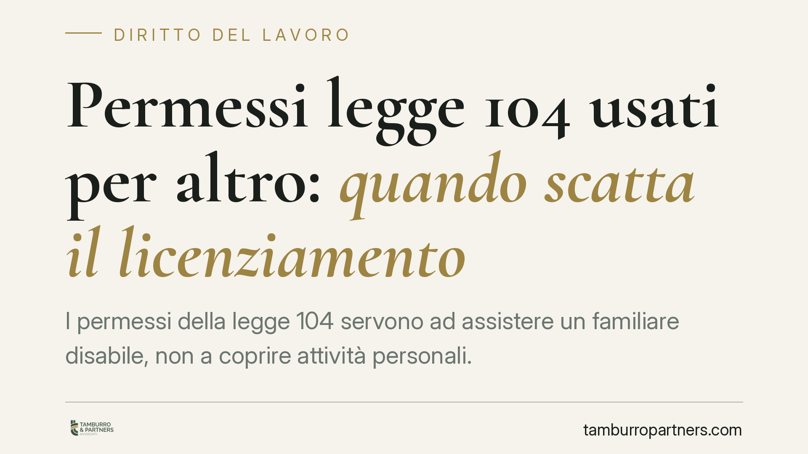

Permessi legge 104 usati per altro: quando scatta il licenziamento
I permessi della legge 104 servono ad assistere un familiare disabile, non a coprire attività personali. La Cassazione, in linea con un orientamento ormai consolidato, ribadisce che l'uso distorto del beneficio integra abuso del diritto e può giustificare il licenziamento per giusta causa, anche senza prova di un dolo specifico. Vediamo cosa cambia per lavoratori e datori.

Il caso e il principio
Un lavoratore fruiva di una giornata di permesso retribuito ai sensi della legge 104, ma solo una frazione minima del tempo disponibile risultava effettivamente dedicata all'assistenza del familiare disabile. Il datore contestava l'abuso e procedeva al licenziamento.
La Sezione Lavoro della Corte di Cassazione, con una recente ordinanza, ha confermato la legittimità del recesso. Il punto centrale non è quantificare al minuto l'assistenza prestata, ma verificare se il permesso sia stato piegato a scopi estranei alla sua funzione. Quando lo scollamento è evidente, il comportamento configura abuso del diritto.
Inquadramento normativo
L'art. 33 della L. 104/1992 riconosce al lavoratore che assiste un familiare con disabilità grave il diritto a tre giorni mensili di permesso retribuito. Si tratta di un beneficio vincolato nella causa: non è un permesso liberamente disponibile, ma uno strumento finalizzato a garantire l'assistenza. Il costo economico grava sulla collettività, poiché l'indennità è a carico dell'INPS.
Proprio da questa natura funzionale la giurisprudenza fa derivare un limite preciso. Se il tempo del permesso viene destinato ad attività personali del tutto scollegate dall'assistenza, il lavoratore travalica lo scopo per cui il diritto è attribuito. È qui che entra in gioco la categoria dell'abuso del diritto: l'esercizio formalmente lecito di una prerogativa per finalità diverse da quelle tutelate.
Questo orientamento non è isolato. Da anni la Cassazione ha costruito un filone consolidato secondo cui l'uso del permesso per fini estranei all'assistenza lede sia il rapporto di fiducia con il datore, sia l'ente previdenziale che sostiene l'onere economico.
Abuso del diritto e giusta causa
Un aspetto rilevante riguarda il livello di prova richiesto. Non serve dimostrare un dolo specifico, cioè l'intenzione premeditata di frodare. È sufficiente che emerga uno sviamento oggettivo del permesso dalla sua funzione. Non occorrono nemmeno misurazioni cronometriche rigide: ciò che conta è il quadro complessivo.
La condotta, per la sua gravità, può integrare la giusta causa di cui all'art. 2119 c.c., ossia quel comportamento che lede in modo irreparabile la fiducia e non consente la prosecuzione, neppure provvisoria, del rapporto. Il disvalore è duplice: violazione degli obblighi verso il datore e indebita percezione di un beneficio a carico dell'INPS.
Il profilo della restituzione delle somme
Merita una precisazione il tema del recupero delle indennità. La questione va inquadrata con cautela e distinguendo i piani. Sul versante datoriale, il datore può contestare la condotta sotto il profilo disciplinare ed economico. Sul versante previdenziale, l'eventuale azione dell'INPS attiene tipicamente al recupero di somme indebitamente erogate e si sviluppa secondo regole proprie, che non coincidono automaticamente con l'esito del giudizio sul licenziamento. Non è quindi corretto dare per scontata una ripetizione diretta a carico del lavoratore in ogni caso: occorre valutare la singola fattispecie.
Implicazioni pratiche
Per il lavoratore, il messaggio è chiaro: il permesso 104 non è tempo libero retribuito. Anche condotte apparentemente marginali possono essere valutate nel loro complesso e condurre al recesso.
Per il datore, la legittimità del licenziamento non dipende da controlli invasivi né da prove impossibili, ma resta ancorata al rispetto delle garanzie procedurali dell'art. 7 dello Statuto dei lavoratori: contestazione tempestiva e specifica, termine a difesa, proporzionalità della sanzione.
Cosa fare in concreto
Per i lavoratori:
- Utilizzate il permesso esclusivamente per attività riconducibili all'assistenza del familiare.
- Conservate elementi che documentino l'attività svolta (visite, spostamenti, esigenze del disabile).
- Non presumete che frazioni di tempo dedicate ad altro siano irrilevanti.
Per i datori:
- Formalizzate la contestazione disciplinare nel rispetto dell'art. 7, con addebiti precisi e circostanziati.
- Raccogliete prove lecite e proporzionate, evitando forme di controllo vietate.
- Valutate la proporzionalità della sanzione rispetto alla condotta accertata.
In presenza di contestazioni o dubbi, è opportuno acquisire un parere qualificato prima di assumere iniziative.
Disclaimer
Contributo informativo a cura di Tamburro & Partners Avvocati - Avv. Giuseppe Tamburro. Non costituisce parere legale.
Ogni storia di lavoro ha i suoi tempi.
Se gestisci HR e vuoi un confronto su contenzioso, ispezioni o licenziamenti, scrivi allo studio. Ti rispondiamo entro un giorno lavorativo.